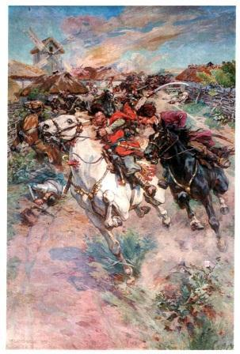

Хронологія Національно-визвольної війни під проводом Богдана Хмельницького
Передумови
- Перебування українських земель під владою Речі Посполитої.
- Відсутність власної державності.
- Засилля в Україні польських магнатів і шляхти.
- Національно-релігійне гноблення українського населення з боку польської влади.
- Виникнення козацтва і перетворення його на провідну політичну силу українського суспільства
- Великі козацько-селянські повстання 90-х років XVI ст. та 20-30-х років XVIІ ст.
Причини
- Політичні:
- Долучення українських земель до складу Речі Посполитої, політика якої відносно України мала яскраво виражений колоніальний характер.
- Колонізація загрожувала винищенню української народності, що було великою національною небезпекою.
- Відсутність власної державності (Запорозька Січ не охоплювала значних територій, заселених українцями).
-
Соціально-економічні:
- Посилення феодально-кріпосницького гніту, погіршення становища народних мас.
- Зростала панщина, яка в деяких місцевостях сягала 4-5 днів на тиждень.
- Польський уряд постійно обмежував реєстр, позбавляв їх самоврядування — всі вищі посади їхнього війська посідали за призначенням (часто польські шляхтичі).
- Національні:
- Не припинялося ополячення українського населення.
- Відбувалося обмеження українців у правах.
- Релігійні:
- Утиски православної церкви.
- Насильницьке покатоличення українського населення.
- Невдоволення православної шляхти, яка користувалася значно меншими політичними правами, ніж польська.
Завдання Національно-визвольної війни
- Визволити Україну з-під влади шляхетської Польщі, знизити польське панування, стати на шлях самостійного розвитку.
- Скинути гноблення польських феодалів і польсько-шляхетської адміністрації.
- Ліквідувати велику феодальну власність на землю, скасував ти кріпацтво та утвердити козацький тип господарювання
- Створити в етнічних межах України власну державу
- Обстоювати і захищати національну незалежність.
Періоди Національно-визвольної війни
Перший — 1648—1649 pp. — час перших великих успіхів повсталих, найбільшого розмаху Національно-визвольної війни, початок формування Української козацької республіки — Гетьманщини.
Другий — 1650-1653 pp. — період кровопролитних боїв і значних втрат, який, проте, жодній зі сторін успіху не приніс.
Третій — 1654-1655 pp. — період ведення перемовин і укладення договору з Росією та її допомога в боротьбі проти Речі Посполитої.
Четвертий — 1656-1657 pp. — період пошуку нових союзників у війні, укладення союзу України з Семигородським князівством, а також спільні дії козацтва і шведської армії проти Польщі.

Хронологія Національно-визвольної війни
- 1648 р., 25 січня — початок Національно-визвольної війни українського народу. Обрання гетьманом Богдана Хмельницького.
- 1648 р., лютий — Б. Хмельницький у Бахчисараї уклав союзну угоду з кримським ханом про надання військової допомоги.
- 1648 р., 5-6 травня — перемога козаків над польським військом Стефана Потоцького під Жовтими Водами
- 1648 р., 16 травня – розгром польської армії Миколая Потоцького у Гороховій Діброві поблизу Корсуня. Звільнення всієї Лівобережної України.
- 1648 р., 11-13 вересня – розгром армією Б. Хмельницького польського війська під Пилявцями. Українські загони дійшли до Західної України.
- 1648 р., 26 вересня — 16 жовтня – облога українським військом Львова, Гетьман обмежився викупом.
- 1648 р., 28 жовтня — 14 листопада – облога армією Б. Хмельницькою Замостя.
- 1649 р., 30 червня-13 серпня – облога повстанським військом фортеці Збараж.
- 1649 р., 21 липня – битва під Лотом, загибель київського полковника Михайла Кричевського. Литовське військо Януша Радзнвілла зазнало значних втрат і зупинило свій наступ.
- 1649 р. 5-6 серпня – розгром польського війська поблизу міста Зборів.
- 1650 р., серпснь-вересень — перший молдовський похід козацьких військ. Господар Молдови Василь Лупул зобов’язувався не допомагати Польщі.
- 1651 р., 18-30 червня — битва під Берестечком. Поразка козацького війська. Вихід значної частини українського війська з оточення завдяки рішучим діям наказного гетьмана І. Богуна.
- 1657 р., січень-липень — воєнні дії армії трансільванського князя Юрія (Дєрдя) II Ракоці та козацьких загонів на чолі з київським полковником Антоном Ждановичем проти Польщі, закінчилися фактично невдало.
- 1657 р., 27 липня — смерть Б. Хмельницького у Чигирині.
Наслідки Національно-визвольної війни українського народу
- Відродження Української держави, відокремлення Війська Запорізького від Речі Посполитої.
- Ліквідація кріпосної залежності селянства.
- Об’єднання народу навколо гетьмана і козацької старшини.
- Перетворення козацтва на політичну еліту держави, привілейований стан.
- Україна посіла вагоме місце у міжнародних відносинах тогочасної Європи.